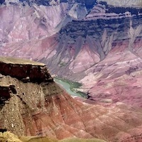
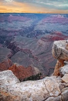

Assignment 2
Basic CSS
Every morning, the school hallway fills with the sound of lockers opening and students greeting one another. Some people rush to class while others walk slowly, enjoying the last moments before the bell rings. Teachers prepare their lessons, hoping to inspire curiosity and understanding. Posters on the walls remind students to work hard and treat others with respect. Even though each day may seem routine, every school day brings new opportunities to learn something unexpected.
On a quiet afternoon, the local park becomes a peaceful place to relax and think. Birds fly between trees while people walk along the paths or sit on benches. The sunlight creates patterns on the ground as clouds slowly move across the sky. Many students visit the park after school to unwind or finish homework. Moments like these show how important it is to balance responsibility with rest.
 